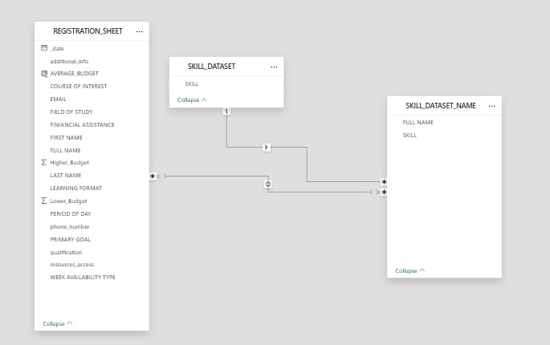

<article class="post featured">
  <header class="major">
    <h1><a href="#">Student Data Optimization & Monitoring</a></h1>
    <p>
      Data Cleaning & Transformation for Training Data Optimization : To
      optimize training data for analytical modeling, I conducted a
      comprehensive review of the ingested dataset. This included identifying
      and addressing missing values, removing duplicates, standardizing
      inconsistent data formats, and converting data types to ensure uniformity.
      I engineered new features such as training period, data quality flags, and
      category indicators to enhance model readiness. Conditional logic was
      applied to flag outliers and incomplete records, ensuring only
      high-quality data flowed into the star schema. These meticulous
      transformation steps laid the foundation for a clean and efficient
      dimensional model, enabling scalable and accurate analysis of training
      outcomes.
    </p>
    <a href="#" class="image main"
      ></a>

    <br />

    <p>
      Data Visualization & Insights I developed an interactive dashboard to
      deliver both descriptive and diagnostic insights on the training dataset.
      KPI cards showcased key metrics such as the total number of applicants,
      most active time periods during the day, top courses of interest, and
      dominant availability types (e.g., weekdays vs. weekends). Visual elements
      included bar charts to understand career goals, pie charts showing the
      distribution of applicant availability, and treemap to undertsnad the
      skill set distribution.
    </p>
    <a href="#" class="image main"
      ></a>
  </header>
</article>
